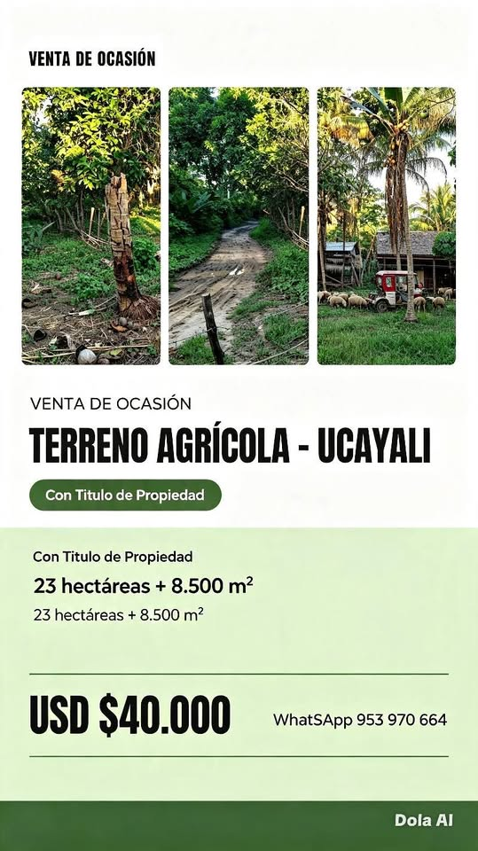

PEN40,000 23 ha

🔥 VENTA DE OCASIÓN 🔥 🌾 TERRENO AGRÍCOLA EN CASERÍO UNIÓN DE MASISEA – UCAYALI ✅ Con Título de Propiedad – Documentación en regla Datos destacados: 📐 23 hectáreas + 8.500 m² 🛻 A hora y treinta minutos via terrestre y 2 horas via fluvial🚤 desdé ciudad de Pucallpa. 💰 Precio: USD $40.000 DOLARES PRECIO NEGOCIABLE Cultivos y producción: 🍌 2 ha plátano bellaco en producción 🍋 0,5 ha limón piurano 🌽 2,5 ha maíz 🍌 2,5 ha plátano bellaco recién sembrado 🥥 15 árboles de Coco 🍫 5 arbolles de cacao 🍋 10 arbokes de limones dulces 🍊 4 arboles de toronjas 🥭 10 arboles de mangos cafro